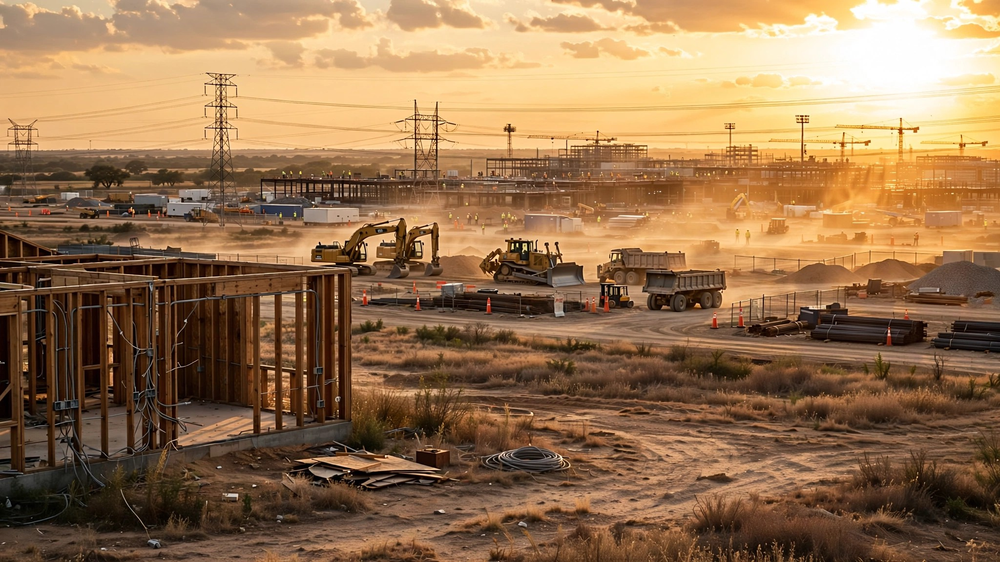

Meta Spent $115 Million Training Electricians. None of Them Will Wire Your House.
Big Tech needs construction workers, and so does the housing market. One side is offering $35 an hour with travel and a guaranteed job. Nobody on the other side can match that.

Scotty Wristen has been wiring houses in Abilene, Texas, for years, running a small residential electrical shop called WE Electric that pays his crews about $20 an hour, which is the going rate for residential work in a midsize Texas city where margins are thin and customers are price-sensitive and nobody pretends the job comes with glamour.
Then OpenAI showed up.
Stargate, the company's 4-million-square-foot AI data center backed by OpenAI, Crusoe, and Oracle, broke ground outside Abilene and started hiring electricians at $35 an hour plus overtime and per diem, a 75 percent premium over anything Wristen can offer without destroying his own margins. His competitors in residential construction are caught in the same vise. Gene Lantrip, another Abilene builder, told the Texas Tribune that his homes now take two months longer to finish because his electrician lost two lead men and several helpers to the data center. "My subcontractors don't have the people," Lantrip said.
This is not an Abilene problem but a national restructuring of who builds what, and residential construction is losing.
How Big Is the Drain
Before the data center boom, the U.S. construction industry was already short roughly 439,000 workers, according to ITIF's analysis of Bureau of Labor Statistics data from late 2025. Jim Tobin, president and CEO of the National Association of Home Builders, told Fox News Digital in June 2026 that the industry is short about 250,000 workers every month, and it's been as high as 400,000.
Into that gap walked a construction boom unlike anything the industry has seen since the interstate highway system, except this one builds buildings that serve algorithms instead of cars. Associated Builders and Contractors estimates that $86 billion in data center construction spending in 2026 will require approximately 296,700 workers, a figure that represents 85 percent of the total additional construction workforce need ABC projects for the entire year, not 85 percent of data center needs but 85 percent of every unfilled position in every type of construction in the country, absorbed by one building type.
Four hundred data centers are under development nationwide, with industry projections putting the pipeline at roughly 3,000 new facilities that will generate an estimated 4.7 million temporary construction jobs over their build-out period. Electrical work alone accounts for 45 to 70 percent of a data center's construction budget, according to the International Brotherhood of Electrical Workers. These are not warehouses with plugs. They are among the most electrically intensive structures humans have ever built, and every one of them needs the same licensed electricians that your general contractor needs to wire your kitchen.
$265 Million for Training. Zero for Housing.
On June 8, Meta announced America's Workforce Academy, which it called the largest private-sector skilled trades training commitment with a job guarantee in American history, and the details are genuinely impressive: $115 million in the first year alone, covering a free five-week program in electrical, HVAC, welding, plumbing, and fiber-optic work, with Meta picking up tuition, airfare, lodging, and a daily stipend for participants who need zero prior experience and receive an NCCER industry credential and a guaranteed job offer from a Meta contractor before training even begins.
A week later, Google pledged $50 million to train over 300,000 skilled trade workers. In March, BlackRock launched a $100 million philanthropic initiative targeting the same trades pipeline. OpenAI is building its own Certifications and Jobs Platform near Stargate sites, starting in Abilene, where Scotty Wristen is watching his residential workforce evaporate in real time.
Combined: over $265 million committed to construction workforce development in 2026.
Read the press releases carefully and you will not find the word "housing" in any of them, will not find "residential," will not find "homebuilder," because every dollar of that quarter-billion trains workers for data centers and data centers only. "Now a new generation will pour the foundations and lay the fiber that secures American strength in this new age," Meta's president and vice-chairman Dina Powell McCormick said in the announcement. She did not mention the foundations being poured for the 1.5 million homes America is short.
A Wage Gap That Cannot Close
HBI's Fall 2025 Construction Labor Market Report found that residential construction workers nationwide earn about $39.40 an hour on average, barely below the $39.70 industry-wide figure, a twenty-cent gap that looks survivable until you realize that average blends superintendents and project managers with the electricians, framers, and plumbers actually swinging hammers and pulling wire. For a journeyman residential electrician in a midsize Texas market, $20 to $25 an hour is common. For that same electrician on a data center site: $35 plus overtime plus per diem plus benefits.
A 75 percent raise for doing fundamentally similar work.
Data center developers are spending $86 billion this year; a residential builder running $2-to-$5 million custom homes is not competing in the same economic weight class and cannot match the pay because the margins don't allow it, and the homebuyer cannot absorb it because affordability is already stretched past breaking, and the electrician, who has a family and a truck payment and a perfectly rational desire to earn what his skills are worth, takes the data center money every single time without exception.
What It Costs You
HBI quantified the residential damage: the skilled labor shortage costs homebuilders $10.8 billion per year, split between $2.66 billion in higher carrying costs from extended construction timelines and $8.14 billion in lost production, which translates to roughly 19,000 homes that are simply not built each year because the workers do not exist to build them.
Ed Brady, HBI's president and CEO, told Homes.com in March 2026 that labor constraints are adding nearly two extra months to residential building timelines. "If they don't have the [work], they're going to leave the residential industry and go to the commercial," Brady said, describing a dynamic where steadier schedules, longer project timelines, and better pay on commercial jobs create a one-way current that pulls workers out of housing and never sends them back.
Census data confirmed it in June: single-family housing starts fell to an eight-month low in May, dropping to a seasonally adjusted annual rate of 882,000 units, down 6.7 percent year-over-year, while residential investment has contracted for five consecutive quarters and NAHB's June builder sentiment survey deteriorated further. Builders are not just losing workers but losing the ability to start new projects at all.
A Pipeline Filling from One End, Draining from Another
Here is the math that should keep residential builders awake at night: NAHB and HBI estimate the industry needs approximately 723,000 new workers annually to keep pace with demand, retirements, and turnover while also closing the 1.5-million-home housing gap, and the Department of Education estimates 2.1 million skilled trades jobs could go unfilled by 2030, carrying potential economic losses of $1 trillion annually.
Gen Z is entering construction at higher rates than any recent generation, with workforce participation more than doubling from 6.4 percent in 2019 to 14.1 percent in 2023. Women now account for 11.2 percent of construction employment, a 20-year high. But immigrant workers, who comprise 25.5 percent of the construction workforce and one in three craft positions, are being thinned by immigration enforcement: the AGC's 2025 workforce survey found firms reporting workers leaving or failing to appear because of actual or rumored ICE actions at jobsites, apartment complexes, and entire communities.
Young workers and women entering at one end. Experienced electricians leaving for data centers and immigrant labor disappearing at the other. A pipeline with two leaks and one faucet.
Counterargument, at Full Strength
Big Tech's defense runs like this: training workers for data centers still grows the total pool of skilled tradespeople, a welder trained at Meta's academy could eventually move to residential work, the credential is portable, the skills transfer, and if Meta trains 5,000 electricians who would not have entered construction otherwise, the industry gains 5,000 electricians even if none of them ever touch residential wiring.
This argument deserves serious engagement because it could be right. Rising tides. Bigger pie.
But the pay differential makes the return trip a fantasy, because once a journeyman electrician earns $35 an hour on a data center with overtime, benefits, and a per diem, the $20-an-hour residential job is not a lateral move but a demotion, and with 400 data centers under development, 3,000 projected in the pipeline, and Meta alone pledging $600 billion in U.S. infrastructure spending over three years, the "temporary construction boom" argument assumes a slowdown that current investment trajectories do not support in any scenario short of a global recession or a fundamental collapse in AI demand.
Meanwhile, NFPA's 2026 State of the Skilled Trades report found that while most workers expect AI use to grow this year, what they actually want is better training, not more technology; 61 percent are aware of ongoing deregulation efforts affecting building codes and safety standards, and more than a quarter report experiencing negative impacts already. Workers are telling us what they need, and nobody is writing checks for it.
What Would Actually Help
Three interventions would change the equation for residential construction, and none of them require new technology.
First, wage parity programs: if $86 billion in data center spending can support $35-an-hour electricians, then housing policy can subsidize residential trade wages to close the gap, and a $5-an-hour training and retention supplement for residential electricians would cost roughly $10,400 per worker per year, which for the estimated 400,000 residential electricians nationally comes to $4.16 billion, less than half the $10.8 billion the shortage already costs homebuilders annually.
Second, residential-specific training investment, because not a single dollar of the $265 million Big Tech has committed targets housing. State and federal workforce development programs could create matching funds specifically for residential trades, and HBI already runs the programs that need the money at a scale that matches the problem.
Third, immigration reform that reflects construction's actual workforce composition, because one in three craft workers is foreign-born, and enforcement actions that remove them from jobsites do not create replacement workers but only create vacancies that Abilene and a thousand towns like it cannot fill.
Limitations
Precise wage comparisons between data center and residential electricians rely primarily on the Abilene case study and industry averages rather than a comprehensive national survey, and HBI's $10.8 billion annual cost figure reflects all causes of skilled labor shortage, not data center competition alone. ABC's 296,700-job estimate applies a jobs-per-billion formula to projected spending; actual hiring may differ. And Meta's America's Workforce Academy launched days ago, so graduation rates and worker retention data do not yet exist.
What we know with certainty: residential construction is hemorrhaging workers to better-paying commercial projects, data center construction represents the largest single driver of commercial labor demand in 2026, and every major workforce training initiative from the technology sector targets data center infrastructure exclusively. Your house is not on the curriculum.